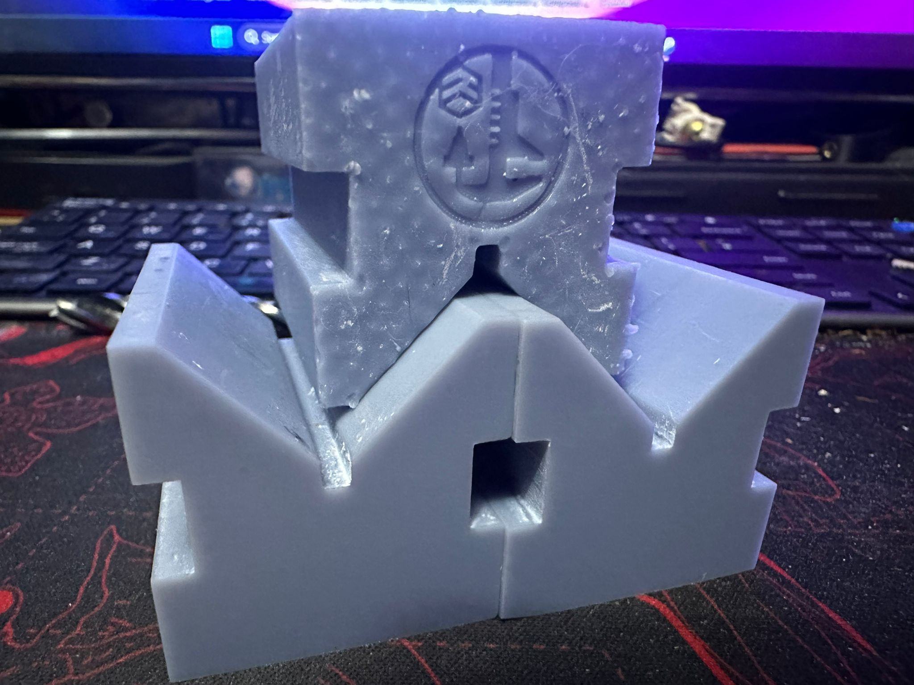
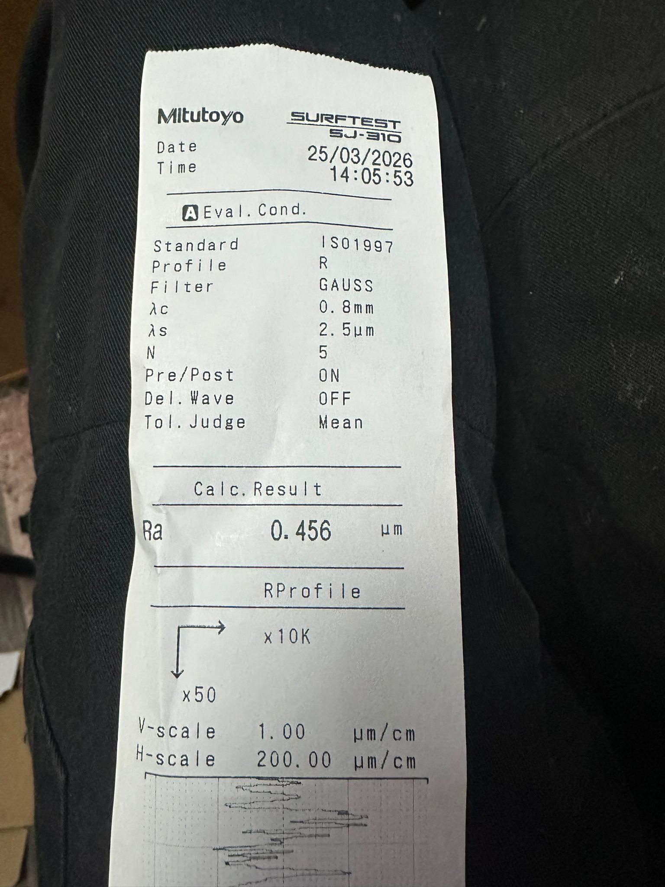

Resin machining compatibility
Since buying a CNC router to machine these vee blocks is a fairly big investment, I needed to make sure it was actually a viable route before fully committing. To test that, I asked a colleague if he could quickly skim the surface of 2 of the 10 prototype vee blocks I printed, just to see whether I was making the right call.
The results were better than I expected. He said the material machined really well and wasn’t difficult to work with at all. It didn’t crack, split, or chip on the edges either, which if I’m honest, was something I expected might happen.
The machined surface looks great, and overall I’m really impressed. It definitely seems like a viable method for removing excess material and improving both the quality and dimensional accuracy of the final product.

That said, the test wasn’t completely without fault. He did mention there was a slight lip on the bottom face of the vee block caused by warping. He only removed around 1 mm of material, so taking off a little more could help, but I think the better solution is simply to machine all of the faces.
At this point, these parts are reaching a quality level I’m genuinely happy with. They’re not just a cheaper alternative — they’re turning out far better than I expected for a budget option.
To back that up, I measured the surface finish of the machined face to confirm whether machining all faces down to final dimension would be the best approach.

And there it is: Ra 0.456 µm.
That’s a really respectable finish for what’s intended to be a lower-cost option, so I’m now fully convinced that machining the faces clean is the right move.
The machine has been ordered, and it should be here next week.